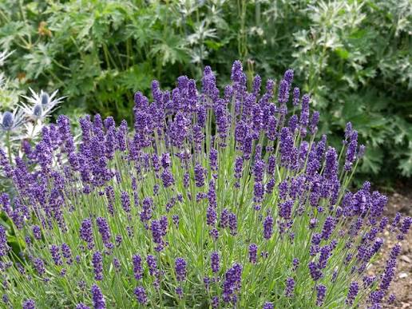

A lavanda é uma planta aromática e ornamental conhecida por suas flores de coloração roxa ou lilás e pelo seu aroma característico.
A lavanda é uma boa opção para um jardim botânico pequeno, pois possui valor ornamental, ocupa relativamente pouco espaço e pode contribuir para a atração de polinizadores, como abelhas.
Sua floração e seu aroma também podem tornar o ambiente mais agradável para os visitantes e ajudar em atividades de educação ambiental.
Nome popular: Lavanda
Nome científico: Lavandula spp.
Família: Lamiaceae
Tipo: Planta aromática e ornamental
Altura: Aproximadamente 30 a 90 cm
Luminosidade: Sol pleno
Solo: Bem drenado
Floração: Varia conforme a espécie e as condições climáticas
Suas flores podem fornecer recursos para polinizadores, contribuindo para a diversidade de organismos presentes no jardim.
A lavanda é conhecida pelo seu aroma característico e é bastante utilizada na produção de perfumes e produtos aromáticos.